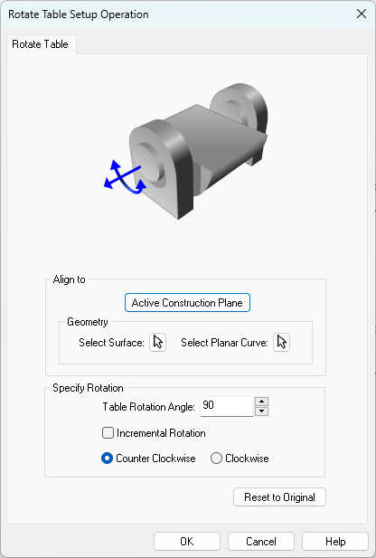

Available in: |
Xpress |
Standard |
Expert |
Professional |
Premium |
Rotate Table Setup
Here you can index the table to any specified angle and then lock the table in position. This can then be followed by any of the allowable 3 axis machining operations, thereby allowing access to the part from different orientations.
MILL module allows you to create 4 axis index toolpath operations. 4 Axis indexing refers to the ability to rotate the part about the X (A) axis or the Y (B) axis and lock it in position in this new orientation and then perform standard 2 ½ and 3 axis milling operations in this locked position. Indexing is usually performed when you fixture the part in a rotary table.
|
This type of programming allows the machining of part geometry that has more than one side to be machined. An example of a shape that cannot be machined with a simple 3 axis toolpath is a sphere. Only one half of the sphere can be machined using 3 axis operations. The other half needs to be approached from the flip side in order for this portion to be machined. Using an indexing head as the one shown will allow easy reorienting of the part.
|
The Rotate Table operation is invoked by selecting the Program tab, clicking on Setup and Rotate Table Setup in the Machining browser. Machining Browser: Setup, Rotate Table Setup menu item |
This dialog allows you to set the 4 axis table rotation parameters.  Dialog Box: Rotate Table Setup Operation |
Active Construction Plane Geometry, Select Surface Geometry, Planar Curve |
The table rotation angle can be specified in absolute or incremental coordinate system. When a rotate table operation is performed, the Rotate Table operation is listed in the Mops browser as Setup followed by a number (ex: Setup 2) and the MCS (Machine Coordinate System) is now oriented to the rotated coordinate as shown below.
The picture below shows the rotation of MCS. The lines in Blue arrow represent the Z axis, Red represents X axis and Green represents Y axis. The rotary axis is set to X (A) axis.
Incremental Rotation Counter Clockwise / Clockwise |

Select this button to reset the dialog to the installation default settings. |